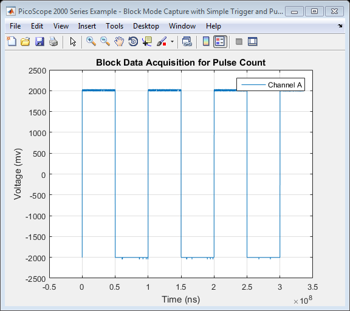

PicoScope 2000 Series Instrument Driver Oscilloscope Block Data Capture with Simple Trigger and Pulse Count Example
This is a modified version of the machine generated representation of an instrument control session using a device object. The instrument control session comprises all the steps you are likely to take when communicating with your instrument.
These steps are:
- Create a device object
- Connect to the instrument
- Configure properties
- Invoke functions
- Disconnect from the instrument
To run the instrument control session, type the name of the file, PS2000_ID_Block_SimpleTrig_PulseCount_Example, at the MATLAB command prompt.
The file, PS2000_ID_BLOCK_SIMPLETRIG_PULSECOUNT_EXAMPLE.M must be on your MATLAB PATH. For additional information on setting your MATLAB PATH, type 'help addpath' at the MATLAB command prompt.
Example: PS2000_ID_Block_SimpleTrig_PulseCount_Example;
Description: Demonstrates how to set properties and call functions in order to collect a block of data from a PicoScope 2000 Series Oscilloscope using a simple trigger and subsequently count the number of pulses after capture.
Copyright: © 2013 - 2016 Pico Technology Ltd. All rights reserved.
Contents
Suggested Input Test Signal
This example was published using the following test signal:
- Channel A: 4Vpp, 10Hz square wave
Clear Command Window and Close any Figures
clc;
close all;
Load Configuration Information
PS2000Config;
Device Connection
% Create a device object. ps2000DeviceObj = icdevice('picotech_ps2000_generic.mdd'); % Connect device object to hardware. connect(ps2000DeviceObj);
Copyright © 2013 - 2016 Pico Technology Ltd. All rights reserved.
PicoScope 2000 Series MATLAB Instrument Driver
Opening PicoScope 2000 Series device...
Instrument Device Object Using Driver : picotech_ps2000_generic.mdd
Instrument Information
Type: Oscilloscope
Manufacturer: Pico Technology Ltd.
Model: PicoScope 2000 Series
Driver Information
DriverType: MATLAB generic
DriverName: picotech_ps2000_generic.mdd
DriverVersion: 1.1.19
Communication State
Status: open
Setting Device Parameters...
Default Channel Setup:-
Channel A:-
Enabled: True
Coupling: DC
Range: 5V
Channel B:-
Enabled: True
Coupling: DC
Range: 5V
Turning off Equivalent Time Sampling...
ps2000SetEts: ETS switched off.
Turning off trigger...
Default data collection parameters:-
Number of samples: 1024
Block sampling interval: 0.66 ms
Oversampling factor: 1
Default Streaming mode parameters:-
Sampling interval: 0.001 ms
Overview buffer size: 15000 samples
Streaming auto stop: 1
Default Signal generator parameters:-
Start frequency: 1000 Hz
Stop frequency: 1000 Hz
Offset voltage: 0 mV
Peak to Peak voltage: 2000 mV
Initialisation complete.
Connected to PicoScope 2000 Series device:-
Instrument Model: 2205A
Batch/Serial Number: GRA01/002
Number of Channels: 2
Buffer memory: 16384 samples
Maximum sampling rate: 200 MS/s
Signal Generator Type: Arbitrary Waveform Generator
Obtain Device Groups
Obtain references to device groups to access their respective properties and functions.
% Block specific properties and functions are located in the Instrument % Driver's Block group. blockGroupObj = get(ps2000DeviceObj, 'Block'); blockGroupObj = blockGroupObj(1); % Trigger specific properties and functions are located in the Instrument % Driver's Trigger group. triggerGroupObj = get(ps2000DeviceObj, 'Trigger'); triggerGroupObj = triggerGroupObj(1);
Configure the Device
Enable Channel A and turn off Channel B, set the sampling interval, number of samples to collect and set a simple trigger.
Set channels:
% Channel : 0 (ps2000Enuminfo.enPS2000Channel.PS2000_CHANNEL_A) % Enabled : 1 (PicoConstants.TRUE) % DC : 1 (DC Coupling) % Range : 8 (ps2000Enuminfo.enPS2000Range.PS2000_5V) [status.setChA] = invoke(ps2000DeviceObj, 'ps2000SetChannel', 0, 1, 1, 8); % 5V range % Channel : 1 (ps2000Enuminfo.enPS2000Channel.PS2000_CHANNEL_B) % Enabled : 0 (PicoConstants.FALSE) % DC : 1 (DC Coupling) % Range : 7 (ps2000Enuminfo.enPS2000Range.PS2000_2V) [status.setChB] = invoke(ps2000DeviceObj, 'ps2000SetChannel', 1, 0, 1, 7); % 2V range
Set sampling interval and number of samples to collect:
% Set sampling interval - the actual sampling interval used by the driver % will be returned. % timeIntervalUs : 100 (microseconds) [samplingIntervalUs, maxBlockSamples] = invoke(blockGroupObj, 'setBlockIntervalUs', 100); % Confirm the timebase index selected. timebaseIndex = get(blockGroupObj, 'timebase'); % Confirm the timebase index selected % Set the number of samples to collect. set(ps2000DeviceObj, 'numberOfSamples', 4096);
Set simple trigger:
% Set the autoTriggerMs property in order to automatically trigger the % oscilloscope after 1 second if a trigger event has not occurred. Set to 0 % to wait indefinitely for a trigger event. set(triggerGroupObj, 'autoTriggerMs', 1000); % Parameters taken from config file loaded into workspace. [simpleTriggerStatus] = invoke(triggerGroupObj, 'setSimpleTrigger', ... ps2000ConfigInfo.simpleTrigger.source, ps2000ConfigInfo.simpleTrigger.threshold, ... ps2000ConfigInfo.simpleTrigger.direction);
Data Collection
Capture a block of data on Channel A together with times. Data for channel is returned in millivolts.
disp('Collecting block of data...'); [bufferTimes, bufferChA, bufferChB, numDataValues, timeIndisposedMs] = invoke(blockGroupObj, 'getBlockData'); disp('Data collection complete.');
Collecting block of data... Data collection complete.
Stop the Device
Additional blocks can be captured prior to stopping the device.
stopStatus = invoke(ps2000DeviceObj, 'ps2000Stop');
Process Data
Process data as required. In this example the data is displayed in a figure and the number of rising and falling edges is counted.
disp('Processing data for plot...') % Find the time units used by the driver timesUnits = timeunits(get(blockGroupObj, 'timeUnits')); % Append to string timeLabel = strcat('Time (', timesUnits, ')'); % Plot figure1 = figure('Name','PicoScope 2000 Series Example - Block Mode Capture with Simple Trigger and Pulse Count', ... 'NumberTitle', 'off'); plot(bufferTimes, bufferChA); title('Block Data Acquisition for Pulse Count'); xlabel(timeLabel); ylabel('Voltage (mv)'); legend('Channel A'); grid on;
Processing data for plot...
Count number of rising and falling edges. Based on Counting Complex Events Using Analog Input Data - MATLAB & Simulink Example - MathWorks United Kingdom.
disp('Counting number of rising and falling edges...') % Set the threshold to 0V. threshold = 0; % Create the offset data. Need to append a NaN to the final sample since % both vectors need to have the same length. offsetData = [bufferChA(2:end); NaN]; % Find the rising edge. risingEdge = find(bufferChA < threshold & offsetData > threshold); % Find the falling edge. fallingEdge = find(bufferChA > threshold & offsetData < threshold); hold on % Show the rising edges with red x's. if(~isempty(risingEdge)) plot(bufferTimes(risingEdge), threshold, 'rx'); end % Show the falling edges with green o's. if(~isempty(fallingEdge)) plot(bufferTimes(fallingEdge), threshold, 'go'); end hold off fprintf(' Num. rising edges: %d\n', length(risingEdge)); fprintf('Num. falling edges: %d\n\n', length(fallingEdge));
Counting number of rising and falling edges... Num. rising edges: 4 Num. falling edges: 3
Disconnect
Disconnect device object from hardware.
disconnect(ps2000DeviceObj); delete(ps2000DeviceObj);
Connection to PicoScope 2205A with serial number GRA01/002 closed successfully. Libraries unloaded successfully.